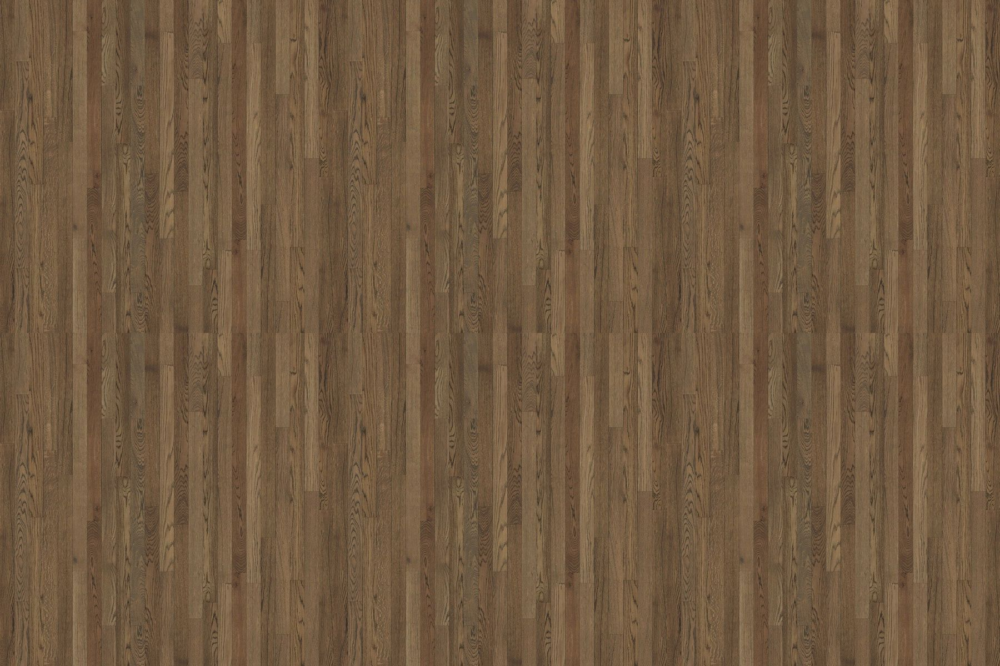
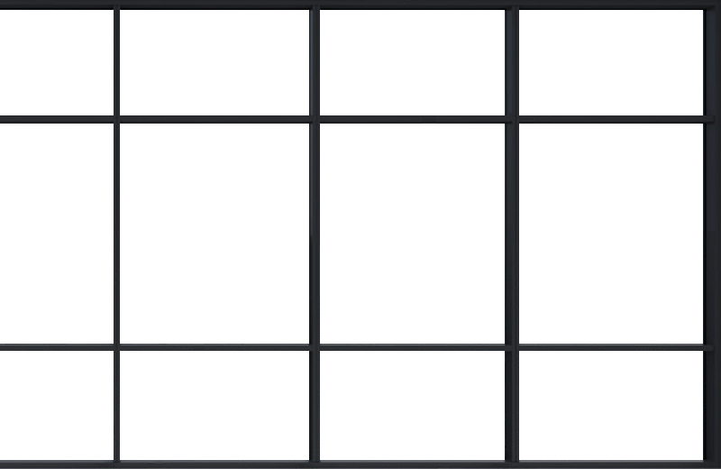
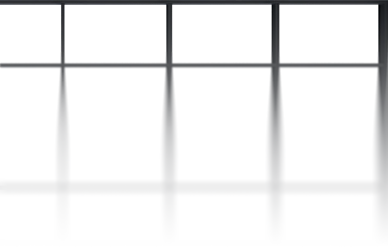
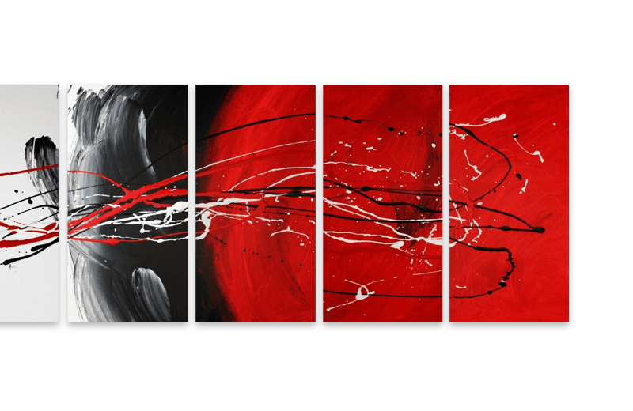
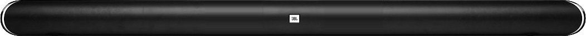
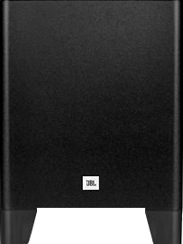
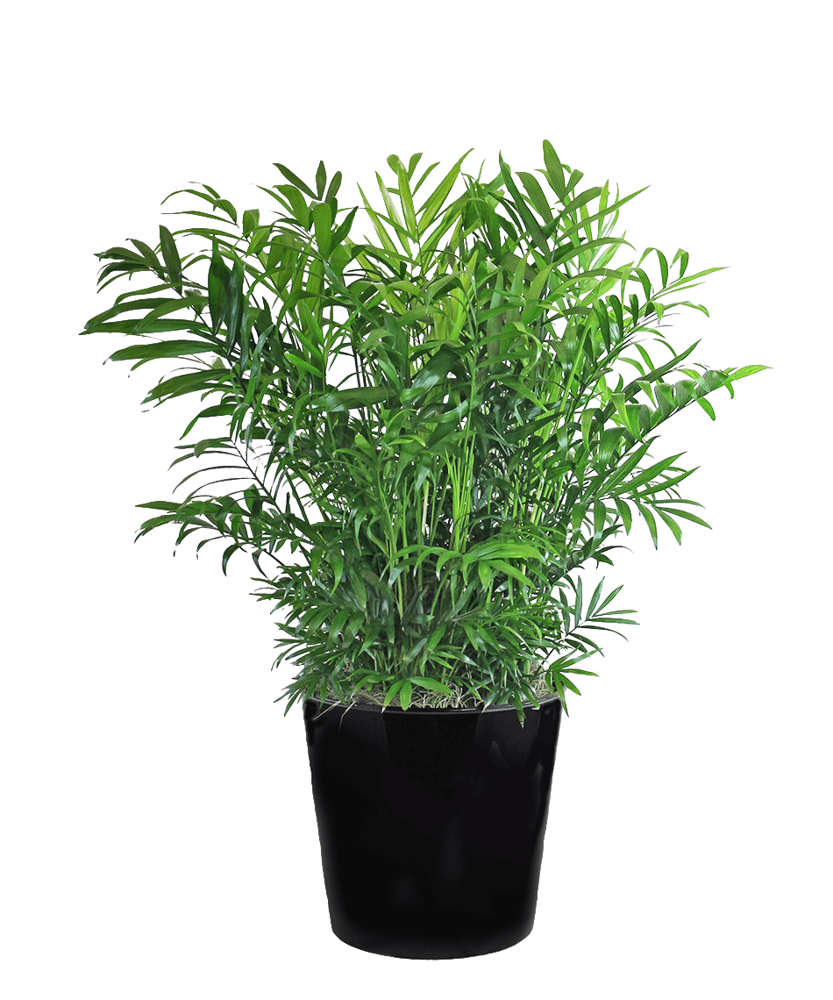
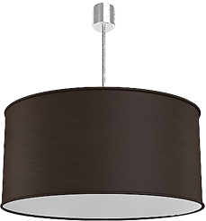
Layer Slider 6
ROOM EXPERIMENT
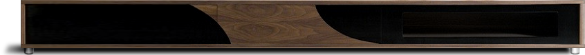


START
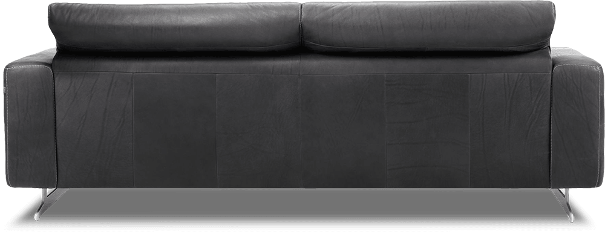
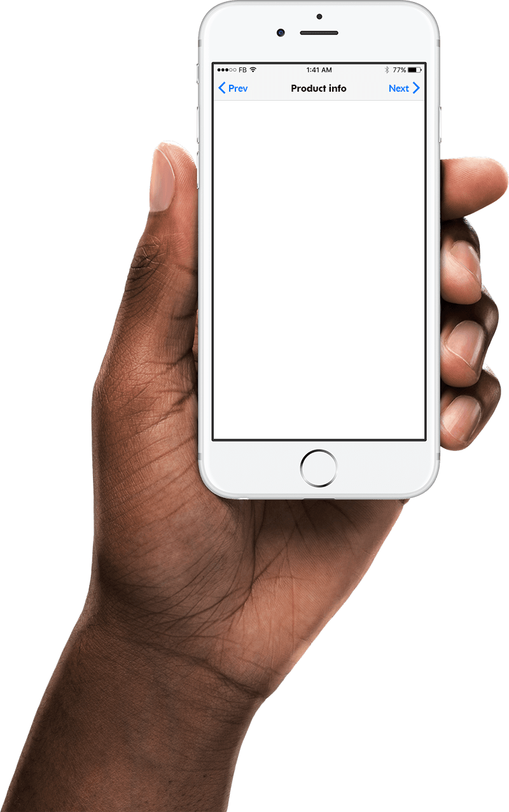
Cubic and straight? Yes, but with amazing details. Samoa modern sofa from innovative manufacturer ROM, Belgium.
Main info
SKU: ROMSAMOA-CO1
>
<
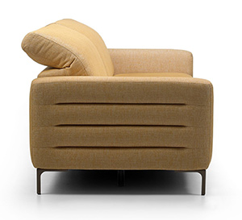
Samoa modern sofa
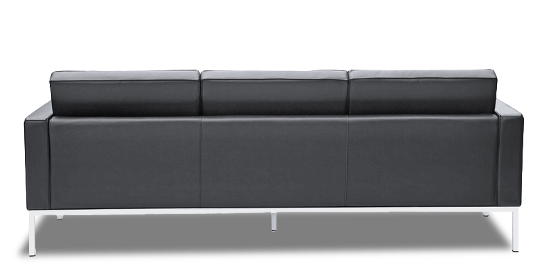
This retro style sofa has square edges with stainless steel feet and trim, and embodies Wegners ideology.
Main info
SKU: ROMWEGNER-CO2
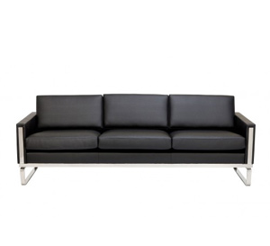
Hans Wegner CH103 Sofa
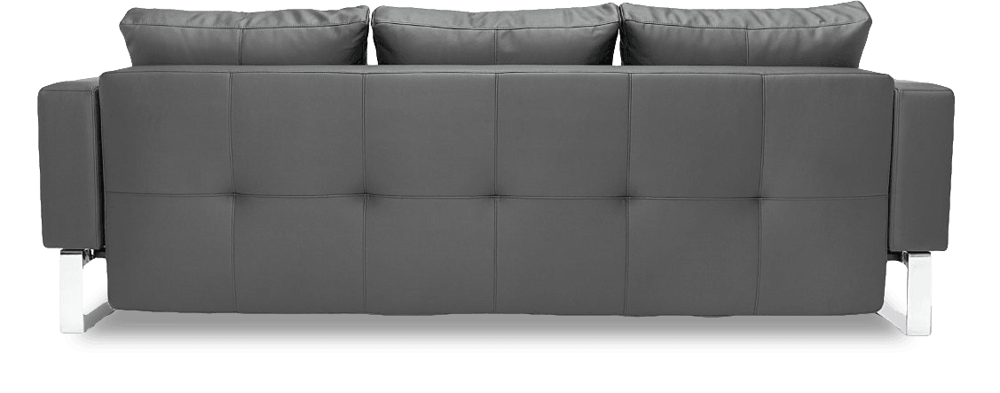
Cassius Q Deluxe Sofa Bed Buy From NOVA Interiors, Contemporary furniture store located in Boston area.
Main info
SKU: ROMCASUS-CO3
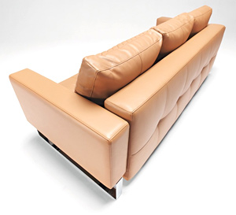
CASSIUS Q DELUXE